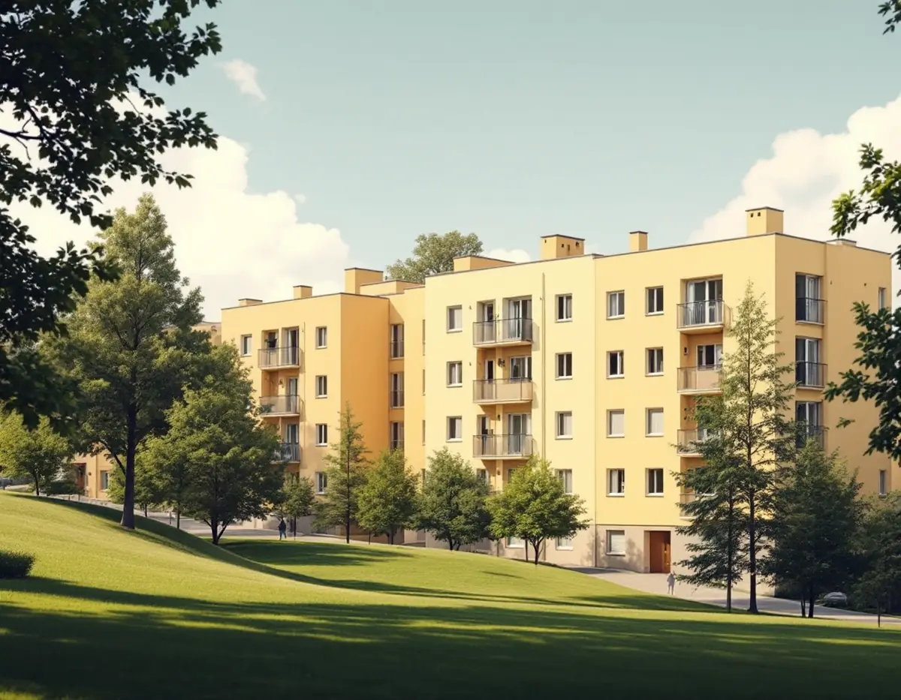
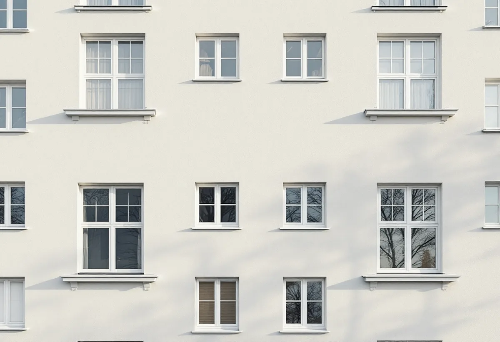
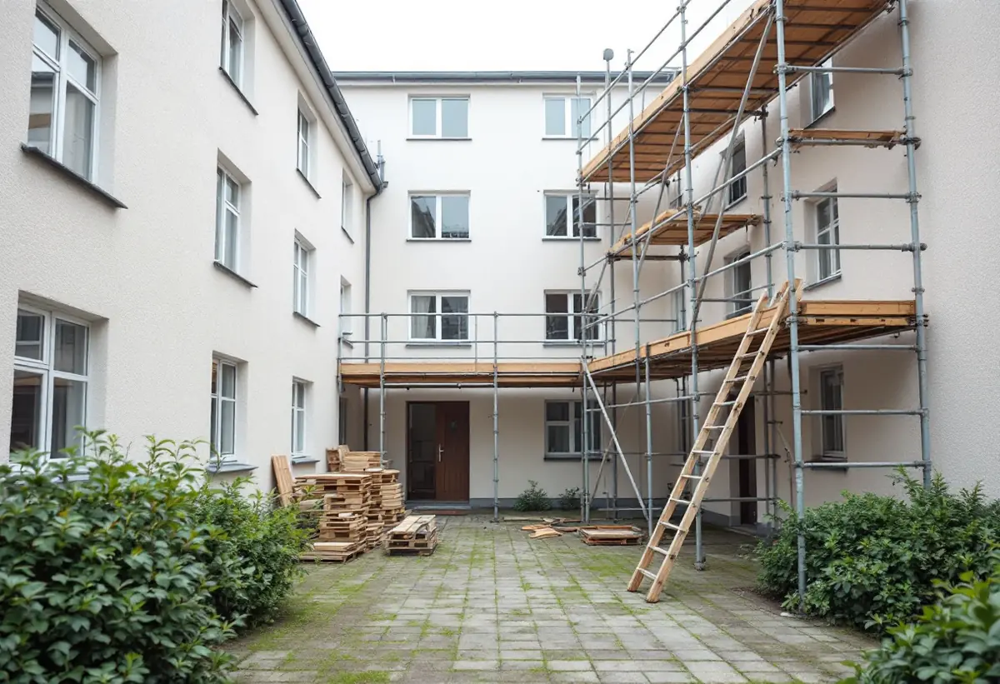

Platsbesök
Gratis besök där vi tittar på puts, färg och skador.

Kungsholmen är en stadsdel av flerbostadshus, och en fasadmålning beställs i regel av en förening eller en hyresvärd.
Beskriv jobbet kort.
Något blev fel. Kontrollera uppgifterna eller ring 08 12 410 276.
Vi tittar på jobbet på plats innan du får offert.
Du ser vad som ingår och vad det kostar.
Vi drar av ROT direkt och sköter ansökan.
Geal Entreprenad AB, Bromma. Org.nr 559303-7566.

Om en ny kulör kräver bygglov beror på vilken fasad det gäller. Geal Entreprenad AB målar fasader och tar fram underlaget till styrelsen eller fastighetsägaren.
Stadsmuseets skrift om Kristineberg berättar att staden köpte Kristineberg och Fredhäll 1920 och att de flesta bostadshusen byggdes under 1930-talet efter stadsplanetävlingar 1927 och 1929. Tjockhus med en bredd på 15–16 meter blev den dominerande hustypen, och efter stadens tävling om billiga bostäder 1932 byggdes de första smalhusen längs Onkel Adams väg.
Skriften beskriver ljusa slätputsade fasader som ett genomgående drag. När ett sådant hus målas om blir kulören en del av en helhet som sträcker sig över hela kvarteret, och det är ett skäl att stämma av kulören mot grannhusen och Stadsmuseets bedömning, inte bara mot det egna huset.

Stockholms stad skriver att det för flerbostadshus krävs bygglov när fasadändringen görs på en fasad eller ett tak som vetter mot allmän plats. Byte av kulör räknas som fasadändring. Ändringar mot gården kan göras utan bygglov om vissa förutsättningar är uppfyllda och huset inte omfattas av utökad lovplikt.
För föreningen betyder det att samma kulör på gatufasaden kan målas om utan lov, medan en ny kulör mot gatan kräver bygglov. Ligger huset i ett riksintresse, i ett särskilt värdefullt område eller är blå- eller grönklassat krävs bygglov även mot gården. Vi börjar med att slå upp huset i Stadsmuseets klassificeringskarta.
Stadens områdesfakta för 2025 räknar på Kungsholmen drygt 30 000 bostadsrätter i flerbostadshus och omkring 10 500 lägenheter hos privata hyresvärdar. Fasaden är en gemensam del av huset, och det är föreningen eller hyresvärden som beställer och betalar en målning.
Inför en stämma eller ett styrelsebeslut behöver föreningen veta vad som ska målas, vilken färgtyp som passar putsen och om lov krävs. Vi tar fram det underlaget efter platsbesöket, med kulörförslag som stämmer med husets ålder.
De få villorna på Kungsholmen ligger nästan alla på Stora Essingen, som stadens vägledning Varsam utveckling av småhus- och villaområden räknar till villastäderna och markerar som kulturhistoriskt värdefull miljö. På en villa krävs normalt inte bygglov för att byta kulör, men det gäller inte om villan eller området är särskilt kulturhistoriskt värdefullt.
Vägledningen beskriver villastädernas individuellt utformade hus, och ber att man tar tillvara karaktärsskapande material, kulörer och detaljer vid ombyggnad. Mer om villamålning finns under målare på Kungsholmen.
Stadsmuseets skrift om Stadshagen berättar att Stadshagsberget under 1930-talet bebyggdes med det första större hyreshusområdet i Stadshagen, och att några av Stora Bryggeriets fabriksbyggnader från 1890 finns kvar. Där står alltså hus från olika tider och med olika fasadmaterial nära varandra.
Vid en målning i ett sådant kvarter föreslår vi kulörer utifrån det egna husets ålder och material och inte efter grannhuset. En gammal fabriksbyggnad och ett bostadshus från 1930-talet behöver inte ha samma kulör.
Gratis besök där vi tittar på puts, färg och skador.
Stadsmuseets karta och om bygglov krävs.
Kulörförslag och färgtyp till styrelsen.
Ställning och tillstånd mot gatan.
Sprickor och lös puts lagas före målning.
Grundning och målning i rätt väder.
Rotavdrag ges i en bostadsrätt bara för arbete inne i bostaden som bostadsrättshavaren ansvarar för enligt stadgarna. Fasader och tak är gemensamma delar, och en fasadmålning på ett flerbostadshus ger därför inget avdrag.
Kostnadsförslaget ställs till föreningen eller fastighetsägaren. Äger du en villa gäller andra regler: där kan målning av fasaden ge rotavdrag på arbetskostnaden.
Fasadernas yta och höjd, putsens skick, hur mycket som behöver lagas, färgtyp, ställning mot gata och gård och om bygglov behövs. Efter ett gratis platsbesök får föreningen ett skriftligt kostnadsförslag.
Fasad, fönster och invändig målning.
Målare i Stockholm →Takbyte, takbesiktning och plåtarbeten.
Takläggare på Kungsholmen →Plåttak i stenstaden och funkis i Fredhäll.
Takrenovering på Kungsholmen →Gårdshus vid villorna på Stora Essingen.
Attefallshus på Kungsholmen →Stambyte, stämmobeslut och 30-talshus.
Badrumsrenovering på Kungsholmen →Föreningens stambyte.
Byggföretag på Kungsholmen →Slätputs på funkishus, lagad utan synliga skarvar.
Fasadrenovering på Kungsholmen →Stenhusen, funkishusen och bygglovet.
Fönsterbyte på Kungsholmen →Fönstret i bostadsrätten, insida och beslag.
Fönsterrenovering på Kungsholmen →Stegljud, golvval och styrelsens tillstånd.
Golvläggare på Kungsholmen →Slipa och lacka golvet i bostadsrätten.
Golvslipning på Kungsholmen →Fläkten, kanalen och föreningen.
Köksrenovering på Kungsholmen →Funkislägenheter, stadgar och ROT i bostadsrätten.
Målare på Kungsholmen →Huvar, skorstenar och genomföringar.
Plåtslagare på Kungsholmen →Förvaring och platsbyggt i små lägenheter.
Snickare på Kungsholmen →Villorna på Stora Essingen.
Takbyte på Kungsholmen →Ny tapet på putsade lägenhetsväggar.
Tapetsering på Kungsholmen →Uterum, kupor och skärmtak.
Tillbyggnad på Kungsholmen →Hela lägenheten från golv till tak.
Totalrenovering på Kungsholmen →Eller ring 08 12 410 276, mån–fre 08–17.
Beskriv jobbet kort.
Något blev fel. Kontrollera uppgifterna eller ring 08 12 410 276.